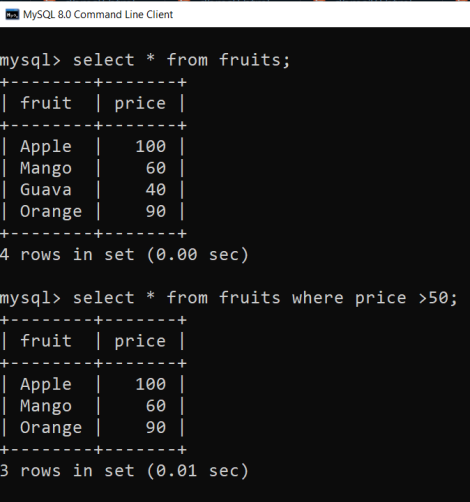
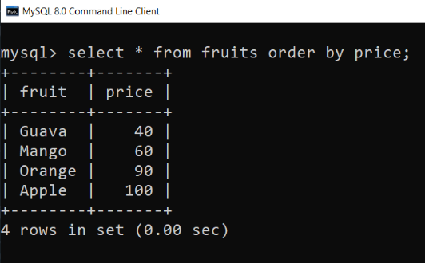
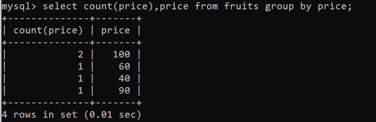

MySQL Clauses
Where Clause
MySQL WHERE Clause is used with SELECT, INSERT, UPDATE and DELETE clause to filter the results. It specifies a specific position where you have to do the operation. Syntax:
WHERE conditions;
For example :
From Clause
The MySQL FROM Clause is used to select some records from a table. It can also be used to retrieve records from multiple tables using JOIN condition. As used in where clause
select * from fruits where price >50;
MySQL ORDER BY Clause
The MYSQL ORDER BY Clause is used to sort the records in ascending or descending order.
For example : (view fruits based on price from cheap to high)
MySQL GROUP BY Clause
The MYSQL GROUP BY Clause is used to collect data from multiple records and group the result by one or more column. It is generally used in a SELECT statement. You can also use some aggregate functions like COUNT, SUM, MIN, MAX, AVG etc. on the grouped column. Syntax :
SELECT column_name(s)
FROM table_name
WHERE condition
GROUP BY column_name(s)
ORDER BY column_name(s);

Having Clause
The HAVING clause was added to SQL because the WHERE keyword cannot be used with aggregate functions.
SELECT column_name(s) FROM table_name WHERE condition GROUP BY column_name(s) HAVING condition ORDER BY column_name(s);